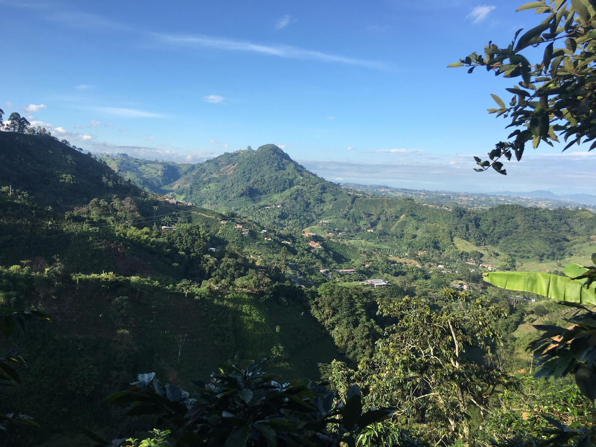
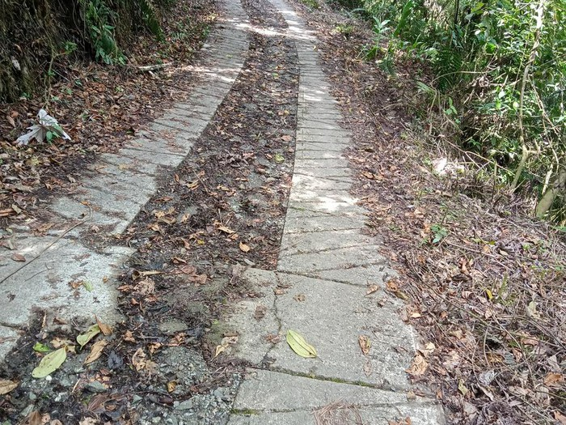
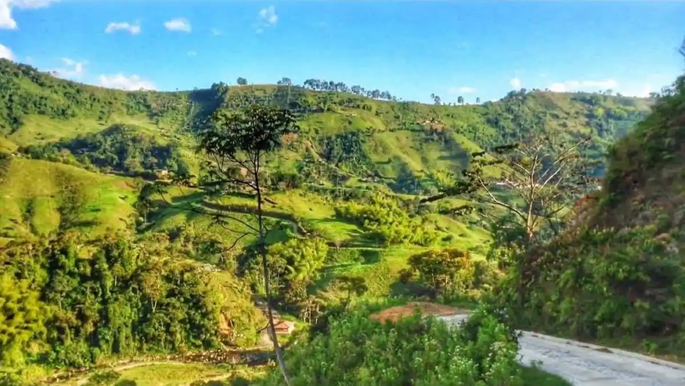

Alto Del Toro
Dosquebradas, Risaralda




Descripción
El Alto del Toro es una vereda en Dosquebradas, Risaralda, Colombia. Se destaca por sus rutas de ciclismo y senderismo, ofreciendo vistas panorámicas del paisaje y una experiencia única en la naturaleza. Es un destino popular para actividades al aire libre y turismo rural.
Características
- 🚴♂️ Rutas de ciclismo
- 🥾 Senderos de caminata
- 🌄 Vistas panorámicas
- 🌿 Entorno natural
- 🏃♂️ Actividades deportivas
- 🌳 Turismo rural
- 📸 Puntos fotográficos
Horarios y Precios
Acceso:
24 horas
Días:
Todos los días
Entrada:
Gratuita
Restaurantes cercanos
-
Caprichito – Comida de Campo
- Ubicación: km 3 vía Frailes, Alto del Toro
- Comida típica en entorno campestre
- Contacto: Instagram
-
Rosa de las Marcadas Café
- Ubicación: Finca La Rosa, km 1 vía Barrio Frailes - Vereda Alto del Toro
- Historia, café y gastronomía local
- Contacto: Instagram
-
La Wayra Casa de Campo
- Ubicación: Dosquebradas
- Gastronomía tradicional familiar
- Ambiente acogedor
- Contacto: Facebook
Alojamientos cercanos
-
Balcón del Cielo Eco Hotel Glamping
- Ubicación: Vereda Alto del Toro, Finca Santa Mónica
- Habitaciones y glamping con vistas panorámicas
- Jacuzzi privado y piscina
- Experiencia única en la naturaleza